هذه مذكرة شخصية على aogl.cn عن فيلم قصير تجريبي يدور حول قرد. ليست درسًا مدفوعًا، بل مسار ملفات حقيقي: لوحة إيقاعية 16:9، وتسع صور ثابتة مرقمة، وبضع مراحل توليدية لتطوير المظهر، وMP4 نهائي. جمع الصور والفيديو والنص في عنوان URL واحد يساعد محركات البحث على فهم حزمة الموضوع (لوحة إيقاعية، لقطات رئيسية، فيديو قصير، سير عمل ذكاء اصطناعي توليدي).
لوحة المسودة 16:9
اللوحة العريضة أدناه خريطة الإيقاع قبل تثبيت اللقطات الفردية. أضف دائمًا فقرة قصيرة بجانب الصور الكبيرة لتبقى الصفحة غنية نصيًا.

اللقطات الرئيسية 1–9
تسع ملفات PNG مرقمة تشكل عمود فقري للمونتاج (وضعية، اتجاه النظر، فراغ سلبي). تذكر رقم اللقطة في النص البديل لتحسين إمكانية الوصول والاستعلامات الطويلة.
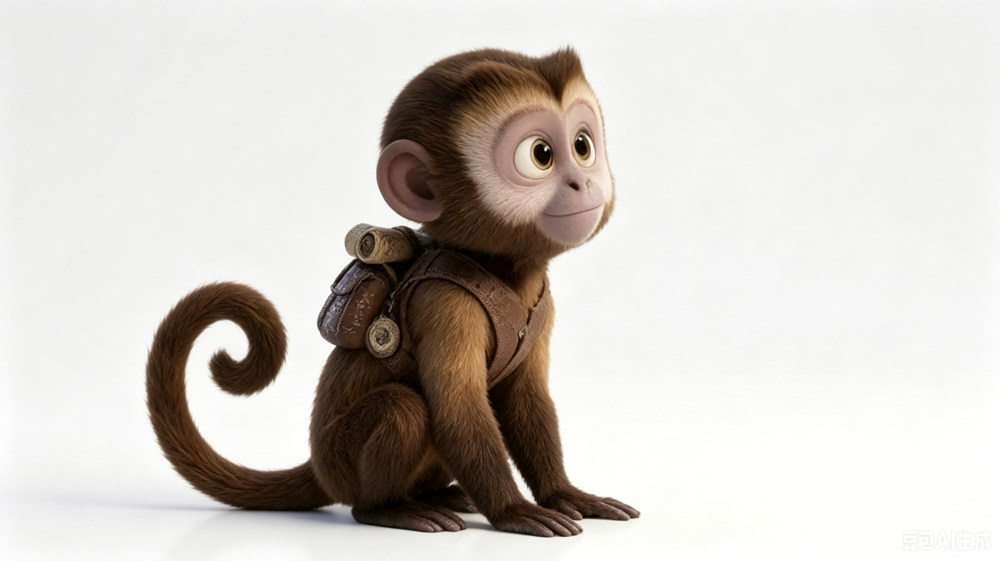
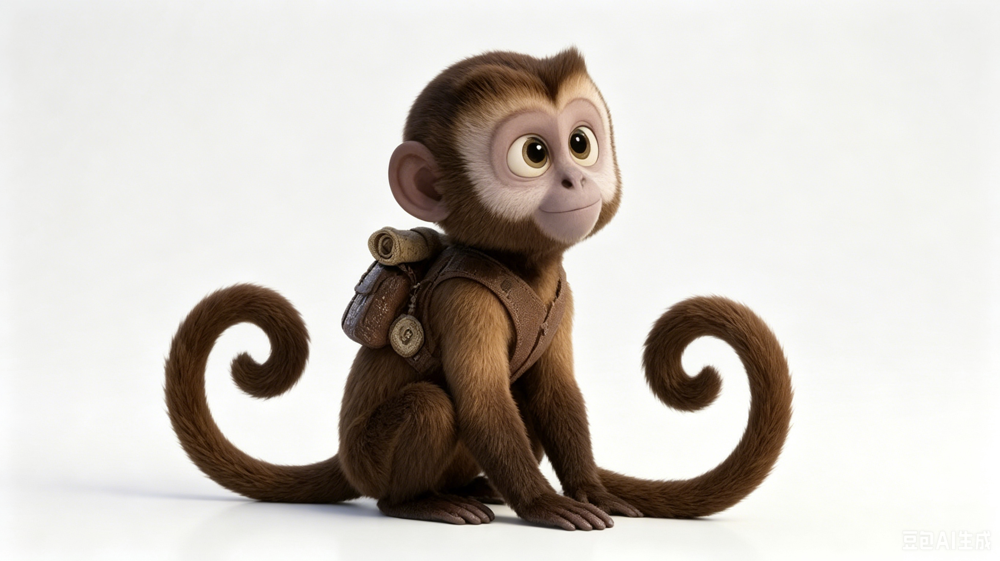
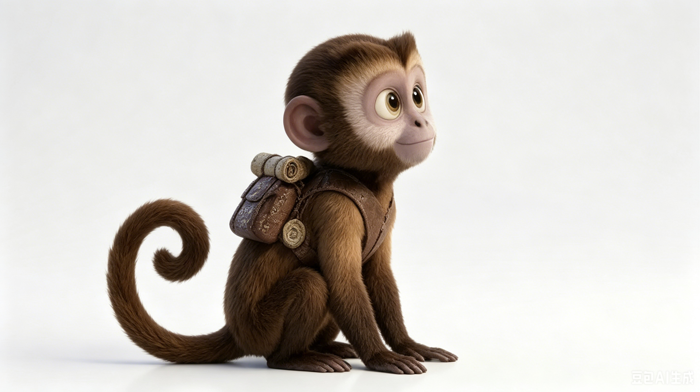
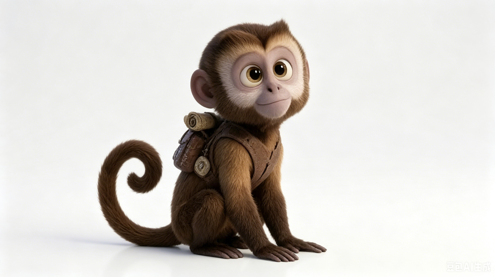
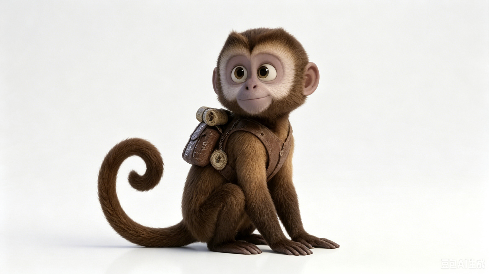
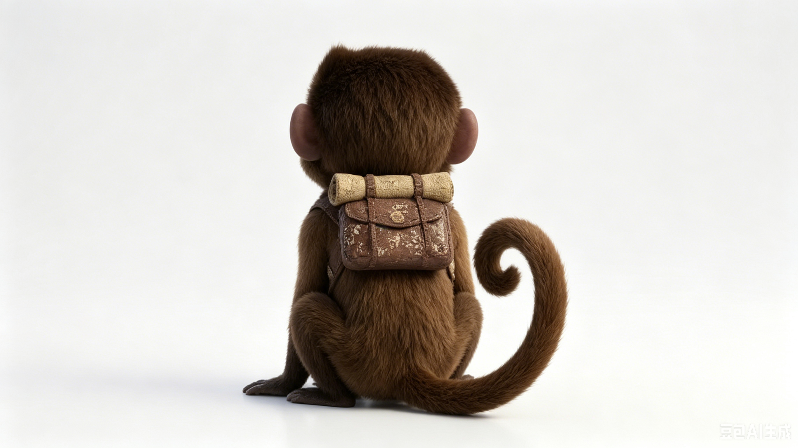
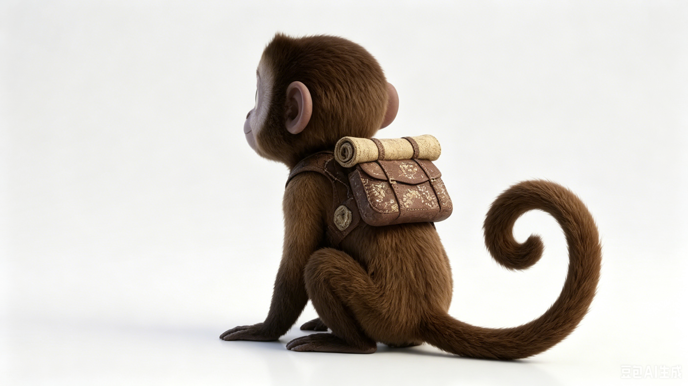
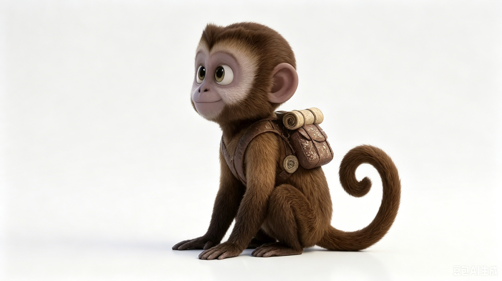
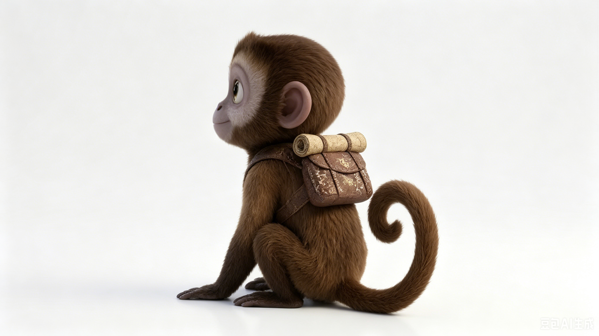
مسارات توليدية
تجارب لوحة ألوان وقراءة سيلويت عبر أدوات توليدية؛ أبقيت ثلاث صور فقط أثرت فعليًا على المزاج النهائي داخل original/monkey/.

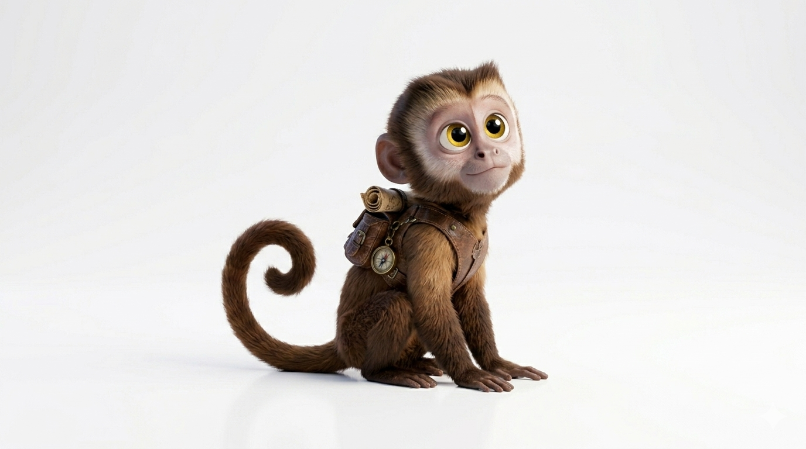
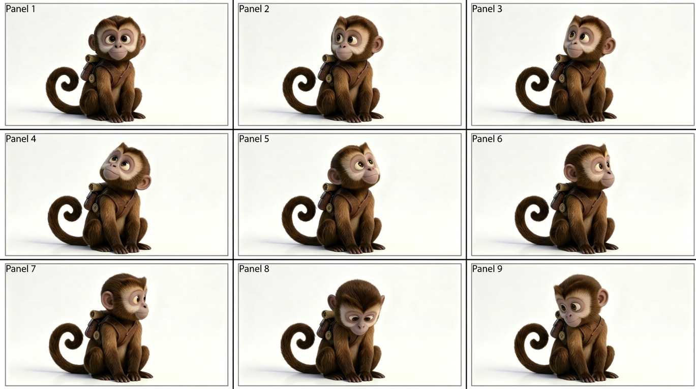
النسخة النهائية (MP4)
الملف monkey-v.mp4. يحتاج المتصفح دعم H.264؛ إن فشل التشغيل، نزّل الملف محليًا.
original/monkey/monkey-v.mp4، مبنية على اللقطات أعلاه.لماذا هذه الصفحة
الشبكات الاجتماعية تضيع المصدر؛ عنوان URL ثابت مع عناوين وبدائل نصية وقصير من السرد يُقتبس منه أسهل ويظهر في البحث أوضح.